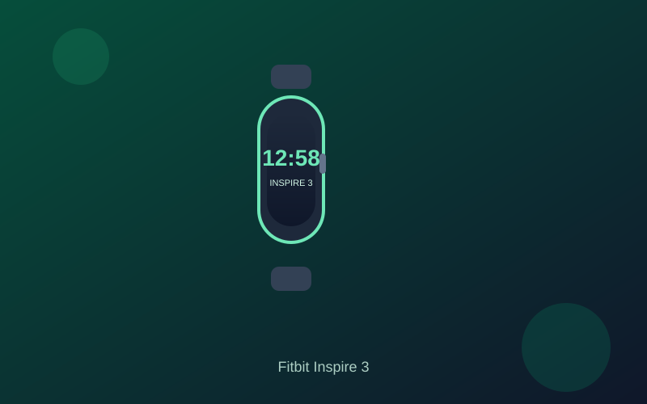

Fitbit Inspire 3 Review: Slim Tracker with 10-Day Battery Under $150
The Fitbit Inspire 3 delivers a discreet AMOLED band, reliable daily health insights, and class-leading battery life at a price that regularly lands between $80 and $100.
For anyone who wants health tracking without the bulk or daily charging of a full smartwatch, the Fitbit Inspire 3 remains one of the clearest values under $150. Its slim, lightweight design disappears on the wrist while still delivering a color AMOLED display, 24/7 heart rate monitoring, and sleep staging that feels more complete than basic step counters.
Battery life is the standout. Google rates it for up to 10 days of typical use, and real-world wear with notifications, auto-detected workouts, and sleep tracking usually lands in the 7–9 day range. That means you can wear it through multiple nights without hunting for a charger. The 5 ATM water resistance covers showers, swimming, and rain without issue.
Health tools cover the essentials well. Continuous heart rate, SpO2, skin temperature variation, and stress management feed into Daily Readiness scores and Sleep Scores inside the Google Health app. Automatic exercise detection handles common activities, and phone-connected GPS gives pace and route data for runs or walks when your phone is nearby. The small 0.76-inch screen keeps the interface simple and glanceable.
Notifications for calls, texts, and calendar events arrive reliably, and the dual haptic buttons make navigation straightforward once you adjust. The trade-offs are honest: no built-in GPS, a compact display that is harder to read in bright sun, and some deeper coaching insights sitting behind the Google Health Premium subscription. For pure daily movement, sleep, and recovery tracking, the free tier covers most needs.
If your priority is a comfortable, set-and-forget tracker that lasts over a week and focuses on core health metrics rather than apps or always-on maps, the Inspire 3 still earns a strong recommendation under $150. It will not replace a larger Wear OS watch, but for most people who mainly want accurate steps, sleep, and heart-rate data, it remains one of the most practical options available.
Key Takeaways
- Price Range: ~$80 – $100 (Amazon / retailers)
- Display: 0.76-inch color AMOLED with optional always-on
- Battery: Up to 10 days typical use (7–9 days realistic)
- Features: 24/7 heart rate, sleep staging, SpO2, stress tools, phone-connected GPS, 5 ATM water resistance